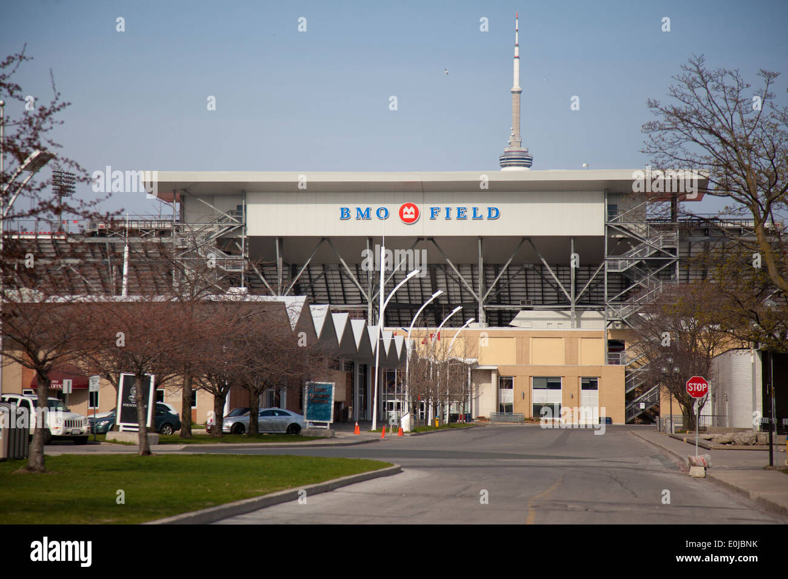
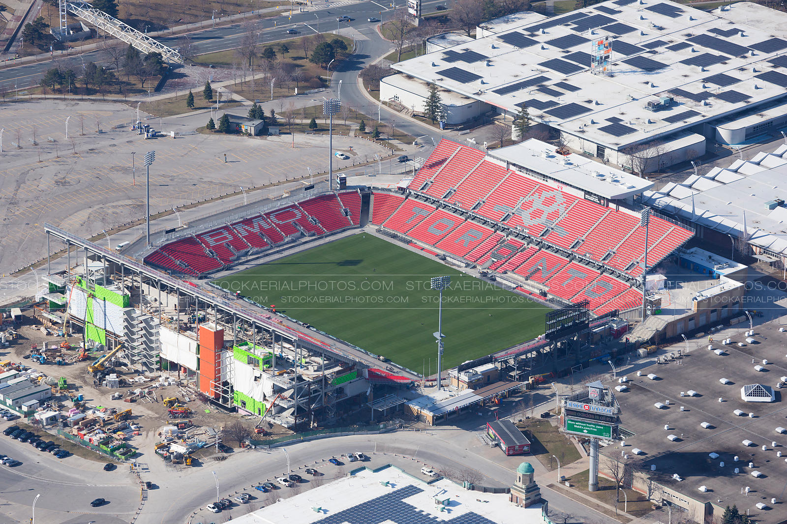
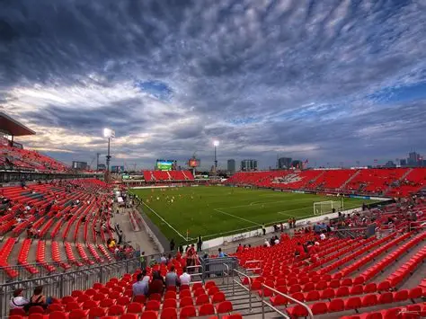

BMO Field



Toronto will host World Cup matches at BMO Field, one of Canada's best known football venues.
The stadium gives the city a strong place in the tournament with a modern setup and an energetic sports atmosphere.
Toronto's international profile and large fan base make it an important Canadian host city for 2026.